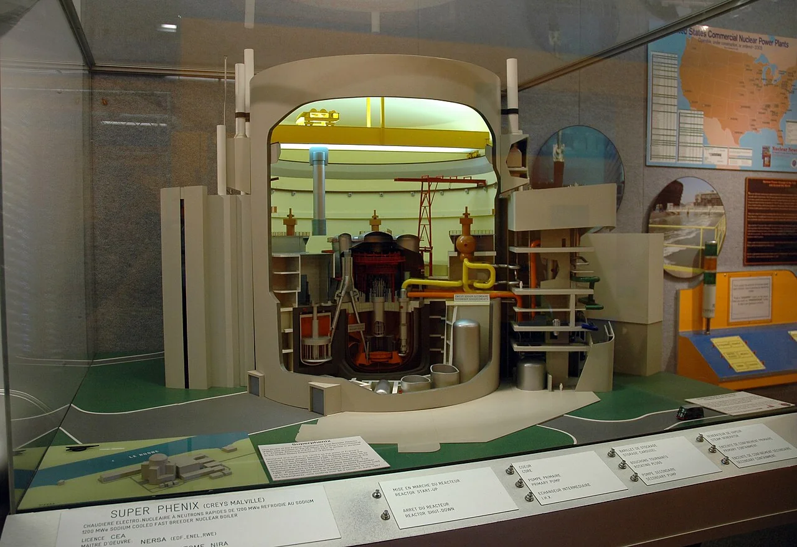
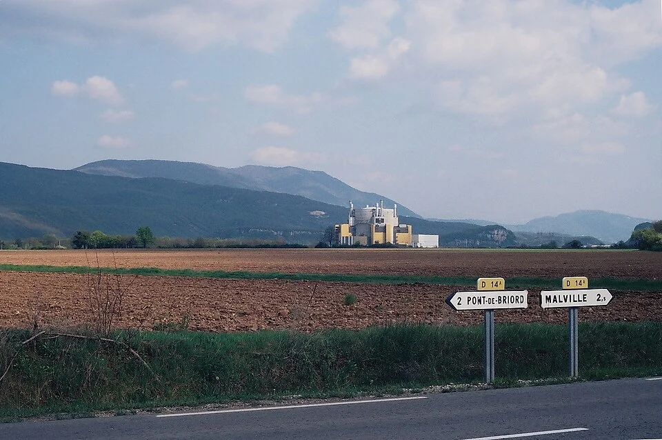
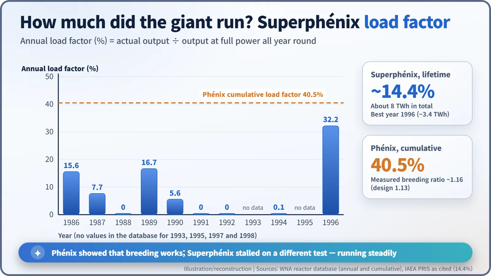

Nuclear History · 212
The Phoenix That Couldn't Fly Twice — France's Fast Breeders Phénix and Superphénix
A prototype that bred more fuel than it burned, a 1,242 MWe giant that rarely ran, and a government decision that ended France's breeder ambition.
France built two fast breeder reactors on the same dream of making more fuel than they burned. Phénix at Marcoule (first critical on 31 August 1973) measured a breeding ratio of about 1.16 and ran, with interruptions, until 2009. The much larger Superphénix at Creys-Malville (1,242 MWe gross, first critical on 7 September 1985) was dogged by protests, sodium leaks and long outages, and was permanently shut down on 31 December 1998 after the government decided to abandon it.
A museum case on the wrong side of the Atlantic
In a museum in Albuquerque, New Mexico, there is a glass display case holding a large cutaway model of a power station, sliced open to show its insides. The label reads "SUPER PHENIX". It was once the biggest fast breeder reactor in the world. Today, oddly enough, the easiest place to look inside it is a museum case on the other side of the Atlantic.

A reactor that makes more fuel than it burns
The story begins with a worry of the 1960s. If nuclear power grew as fast as expected, many forecasters believed, uranium would soon run short. The answer many countries reached for was the fast breeder reactor. [3]
Here is the idea. More than 99% of natural uranium is uranium-238, which hardly splits at all. But when it absorbs a fast neutron it turns into plutonium-239, which is an excellent fuel. A breeder burns fuel while "growing" new fuel at the same time. Because the neutrons must stay fast, it is cooled not by water, which would slow them down, but by liquid sodium metal.
Picture a wood stove that dries the green logs stacked beside it while it burns. The ratio of new fuel made to fuel consumed is called the breeding ratio. If it is above 1, the reactor is truly breeding.
The first phoenix: Phénix
France's atomic energy commission, the CEA, learned the basics with a small experimental reactor at Cadarache, Rapsodie, which went critical in 1967. It then built a power-producing prototype at Marcoule in southern France. Construction began on 1 November 1968; the reactor went critical on 31 August 1973 and was connected to the grid on 13 December that year. It was named Phénix, the phoenix, the bird reborn from its own ashes. The name is often read as a nod to the plan of recovering plutonium from spent fuel and burning it again, though we found no official statement of why it was chosen. [1]
Phénix was a roughly 250 MWe-class plant (233 MWe net), owned 80% by the CEA and 20% by the national utility, Électricité de France (EDF). Its report card was good. Against a design breeding ratio of 1.13, a value of about 1.16 was measured. Some 25 tonnes of its spent fuel were reprocessed, and from 1980 the recovered plutonium went back into new Phénix fuel. In 1997 the American Nuclear Society named Phénix a Nuclear Historic Landmark. [1] [3]
There were trials, too. In 1989 and 1990 the reactor suffered four sudden, large drops in its neutron signal, so-called negative-reactivity events. Their cause was never settled. After long investigations and refurbishment, Phénix restarted in 2003 at a reduced 130 MWe and was used mainly for research into transmutation, turning long-lived radioactive waste into shorter-lived forms. It stopped generating power in 2009 and ran final tests until October; its formal permanent shutdown is recorded as 1 February 2010. [4] [1] [3]
The second phoenix: wings too big
While Phénix was running smoothly, construction of Superphénix began on 13 December 1976 at Creys-Malville, on the Rhône east of Lyon. At 1,242 MWe gross it was nearly five times the size of Phénix, and its reactor systems held some 5,500 tonnes of sodium. It was a European venture, run by a company called NERSA, owned by EDF (51%), Italy's ENEL (33%) and SBK, a German-led consortium (16%). [2] [7]
Opposition was fierce. On 31 July 1977, at a protest that drew tens of thousands of people, a 31-year-old physics teacher, Vital Michalon, was killed during clashes with police. The authorities first spoke of a heart problem, but his death has been reported as caused by the blast of a police "offensive" grenade. [6]

Superphénix went critical on 7 September 1985 and reached the grid on 14 January 1986. But its wings kept folding. In March 1987 about 20 tonnes of sodium leaked from the fuel storage drum (the barillet). In 1990 there was a leak in a secondary circuit, and in December heavy snow brought down part of the turbine-hall roof. In 1994 the plant was even redefined as a research and demonstration facility. [2] [7]
![Twin timeline from 1968 to 2010. Phénix: construction from 1 November 1968, first criticality 31 August 1973, operation until 1990, four unexplained reactivity drops in 1989 to 1990 followed by a long outage, restart at 130 MWe in 2003, power ending in 2009 and formal shutdown on 1 February 2010. Superphénix: construction from 13 December 1976, protest on 31 July 1977, first criticality 7 September 1985, sodium leak in March 1987, long outages, abandonment announced in June 1997 and permanent shutdown on 31 December 1998](../../assets/images/history/212-phenix-superphenix/fig1-twin-timeline.webp)
The decision that grounded the phoenix
1996 was Superphénix's best year: it generated about 3.4 TWh. That December it shut down for maintenance, and in February 1997 France's highest administrative court, the Conseil d'État, struck down the 1994 decree that had allowed it to restart. On 19 June 1997, Prime Minister Lionel Jospin, heading a coalition that included Socialists and Greens, declared: "Superphénix will be abandoned" (our translation of "Superphénix sera abandonné"). A decree of 30 December 1998 confirmed the final shutdown. [7] [5]

Judgements differ. The World Nuclear Association writes that the plant closed "on political grounds". Opponents pointed to repeated breakdowns and cost. In 1996 France's national audit court, the Cour des comptes, put total spending at 60 billion francs, and the plant's lifetime operating factor came to only about 14.4%. Technology, legal procedure, economics and politics were all tangled up in the ending. [3] [7]
If Phénix proved that breeding works, Superphénix showed that running a very large reactor steadily, and winning society's consent to do so, is a separate test. The fast reactor story itself continues today in discussions of Generation IV reactors.